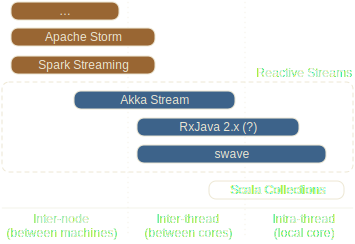
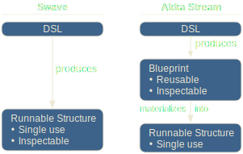

A Preview
 SCALAR 2016-04-22 @ Warsaw
SCALAR 2016-04-22 @ Warsaw
This presentation: http://swave.io/scalar/
Stream Processing Popularity Drivers

- Big data (video, audio, tweets, metrics, sensor data, ...)
- Challenges in distributed/concurrent programming
- Need for powerful, general programming abstractions (that are intuitive, expressive and type-safe)
Focus points of select streaming tools
Scala Collections:
Our intra-thread workhorse
val departments: Seq[Department] = ...
departments
.flatMap(_.employees)
.filter(_.birthday == today)
.zipWith(randomBirthdayCardTemplates)
.map(personalizeCard)
.grouped(16)
.foreach(sendCardBatch)

Our Approaches are shaped by experience
Example: How do you generate 10 random strings?
val buf = new ListBuffer[String]
for (1 to 10) buf += random.nextString()
vs.
List.fill(10)(random.nextString())vs.
Stream.continually(random.nextString()).take(10)Stream-based solutions
- Not limited to “real” data streams!
- Often as good as (or even better than)
alternative approaches - But: Require "Thinking in streams"
which can take some getting used to...
The five basic types of stream transformations
| Simple: | Stream ⇒ Stream |
| Fan-In: | Stream* ⇒ Stream |
| Fan-Out: | Stream ⇒ Stream* |
| Flatten: | Stream[Stream] ⇒ Stream |
| Inject: | Stream ⇒ Stream[Stream] |
Collection counterparts
| Simple: | map, filter, drop, take, fold, ... |
| Fan-In: | union, diff, intersect, zip, ... |
| Fan-Out: | unzip, partition, span, split, ... |
| Flatten: | flatten, flatMap |
| Inject: | grouped, inits, tails, sliding, ... |
Strict vs. lazy collections
| Seq, Set, Map, ... | ⇔ | immutable.Stream, Iterator |
| Storage | ⇔ | Transformation |
| Stand-alone | ⇔ | Pipelines / Graphs |
| Bounded | ⇔ | Potentially unbounded |
| Repeatable | ⇔ | Consumed (Iterator) |
Reactive Streams / Swave:
A generalization of lazy collections
– or –
Lazy collections are a special
kind of Reactive Stream.

Lazy collections vs. RS / swave
| Sync | ⇔ | Sync / Async |
| Pull | ⇔ | Dynamic Push/Pull |
| Never loose elems | ⇔ | Might not observe all |
| Linear "DSL" | ⇔ | Fully "graphed", modular |
| Opaque | ⇔ | Inspectable (swave, Akka) |
| Consumed (Iterator), repeatable (i.Stream) | ⇔ | Consumed (swave), pot. repeatable (Akka) |
Simple example: Monte Carlo Pi(e)

"Complexified" example stream graph

Swave Implementation
[DEMO]
Swave DSL: Basics
import swave.core._
implicit val env = StreamEnv()
val drainResult = // often a `Future[...]`
Stream(1, 2, 3)
.filter(_ > 1)
.map(_.toString)
.to(Drain.head) // can be shortened
.run() // to `.drainTo(drain)`
Swave DSL: homogeneous Fan-Ins
val input: Stream[String] = ...
val output: Stream[String] =
input
.attach(stringStream)
.attach(someStream.map(_.toString))
.attach(...)
.fanInConcat()
// or .fanInMerge()
// or .fanInFirstNonEmpty()
// or .fanInInterleave(...)
// ...
Swave DSL: heterogeneous Fan-Ins
case class Foo(s: String, i: Int, f: Float)
stringStream
.attach(intStream)
.attach(floatStream)
.fanInToTuple // Stream[(String, Int, Float)]
// or .fanInToHList // Stream[String :: Int :: Float :: HNil]
// or .fanInToProduct[Foo] // Stream[Foo]
// or .fanInToSum[ADT]() // e.g. Stream[Either[A, B]] from
// ... Stream[Left[A, B]] and Stream[Right[A, B]]
Swave DSL: Basic Fan-Outs
intStream
.fanOut() // = .fanOut(FanOut.Broadcast)
// or .fanOut(FanOut.FirstAvailable)
// or .fanOut(FanOut.RoundRobin)
.sub.slice(42, 7).to(someDrain)
.sub.map(_.toString).end
.sub.filter(_ min 5).to(someOtherDrain)
.continue // Stream[String]
// or .fanInXXX() // if > 1 subs open
Swave DSL: Mixed Fan-Out-In
intStream
.fanOut()
.sub.map(_.toString).end
.attach(intStream)
.sub.to(Drain.ignore) // just for fun
.attachLeft(floatStream)
.fanInToTuple // Stream[(Float, String, Int)]
Swave DSL: Couplings
val coupling = Coupling[Int]
Stream(1, 2, 3)
.concat(coupling.out)
.fanOut()
.sub.first.map(_ + 3).to(coupling.in)
.subContinue // = `.sub.end.continue`
.foreach(println) // = `.drainTo(Drain.foreach(...))`
// What's the output?

Swave DSL: Couplings
val coupling = Coupling[Int]
Stream(1, 2, 3)
.concat(coupling.out)
.fanOut()
.sub.first.buffer(1).map(_ + 3).to(coupling.in)
.subContinue
.foreach(println)
// output: 1, 2, 3, 4

There is more
- Pipes & Modules
- Types (Forward, Backward, Bidi)
- Definition
- Combinators
- DSL integration
- Testkit w/ automatic test generation
- Debugging, Inspecting & Rendering
Swave Pipeline Graphing
[DEMO]
Coupling example rendered to `2x2 UTF8`
┳ Stream.fromIterable(List(1, 2, 3))
┃
◉━━━┓ fanInConcat()
┃ ┃
◉━┓ ┇ fanOutBroadcast(false)
┃ ┃ ┇
┻ ┃ ┇ Drain.foreach(<function1>)
┃ ┇
◉━┛ ┇ first
┃ ┇
◉ ┏┅┛ bufferBackpressure(1)
┃ ┇
◉ ┇ map(<function1>)
┃ ┇
◉━┛ Coupling()
Swave design goals
- Runtime perf (incl. sync-mode)
- Concise, flexible and general DSL
- Lightweightedness (few dependencies,
i.e. little more than shapeless, no Akka) - Debugability
Swave vs. Akka Stream
| Non-lifted | ⇔ | Lifted |
| Sync + Async | ⇔ | Async |
| Runs on caller thread or Executors | ⇔ | Runs on actors |
| Scala-only | ⇔ | Scala + Java |
| Shapeless-based DSL | ⇔ | Point-to-point Graph DSL |
| Quick evolution | ⇔ | Long-term stability |
Non-Lifted vs. Lifted Design
Swave Roadmap
- Add everything async
- Add macro optimization step
- Increase operation coverage
- Add user documentation
- First release: ScalaDays Berlin
Resources
- Github: https://github.com/sirthias/swave
- Mailing list: https://groups.google.com/forum/#!forum/swave-user
- Twitter: @swaveio
- Also: http://www.reactive-streams.org/